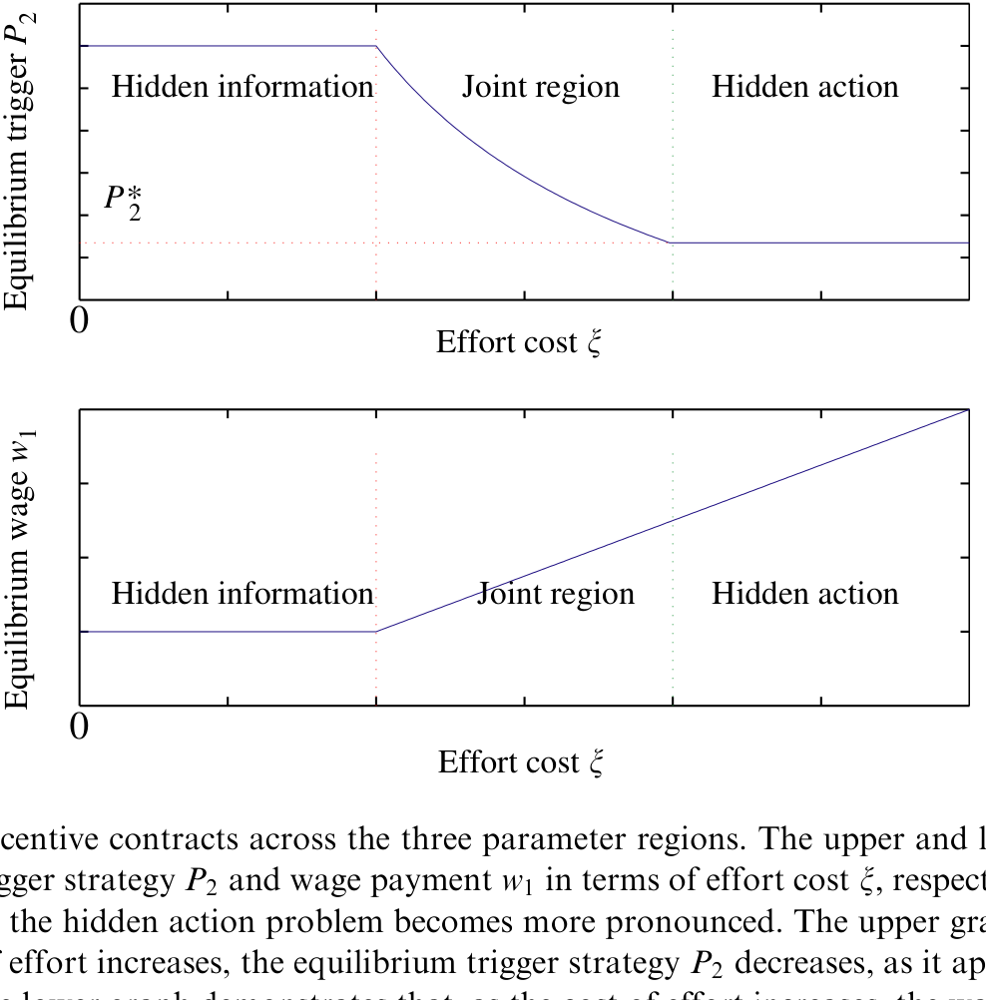
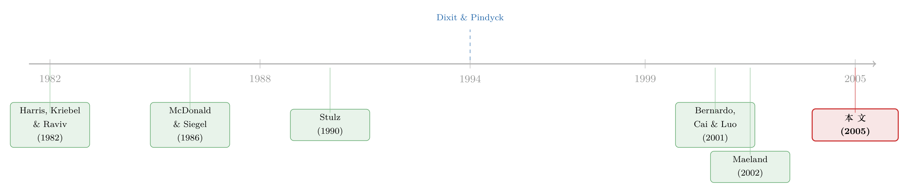

谁的手指扣在扳机上？——把代理与信息装进实物期权的「等待」里
本文读的是 Grenadier & Wang (2005, Journal of Financial Economics)：当一家公司的投资「何时启动」由经理而非股东决定，而经理既掌握私人信息、又能偷偷少出力时，最优合约会把一份投资期权一分为二——经理的期权与所有者的期权。结论是，相比无代理的第一好情形，投资会被系统性地推迟：经理手里那份「等待的期权」，比所有者的更值钱。
1 引言：扳机在谁手里？
实物期权 (real options) 理论给了我们一个干净得近乎优雅的投资时机故事：一个投资机会，等价于一份美式看涨期权；要不要现在投，等价于要不要现在行权。于是，最优策略归结为一个临界值——观察到的项目价值 P(t) 一旦涨过某个触发点 P*，就行权、就投资；否则就等。Dixit and Pindyck (1994) 把这一套讲得明明白白。
可是，这套故事里藏着一个被默认、却从未被言明的假设：扣动扳机的，是期权的所有者本人。
现实里的大公司几乎从不是这样。股东把投资决策委托给了经理——正是为了借用经理的专长与信息。一旦委托发生，两件麻烦事就跟着进来了：其一，经理往往比股东更清楚项目的真实前景（信息不对称）；其二，经理出多大力、是不是在借机建帝国、谋私利，股东看不见也验不了（道德风险）。
于是一个自然的问题浮出水面：当扣扳机的人不是所有者，而是一个有私心、有私货的经理，那个干净的触发点 P* 还成立吗？投资会变早，还是变晚？
公司金融文献里，关于代理与信息如何扭曲投资，已经有一大批模型。但它们几乎都盯着投资决策的第一个维度——投多少钱（资本配置），由此得出「过度投资」或「投资不足」的结论。Grenadier 和 Wang 这篇论文换了一个角度，去问投资决策的第二个维度——什么时候投。用他们自己的话说，与「过度/不足投资」相对应的，是「仓促投资 (hurried investment)」还是「延迟投资 (delayed investment)」。
这就是本文要反复讲透的那一个核心：把委托代理塞进实物期权，等待这件事本身会被重新定价。
2 模型设定
我们先把舞台搭起来。
所有者（principal）手握一份投资单个项目的期权，他把行权决策委托给经理（agent）。项目一旦上马，产生两部分价值。一部分是可观察、可写进合约的——记作 P(t)；另一部分是只有经理私下看得到的——记作 θ。于是项目总价值是 P(t)+θ。
可观察的那部分，照实物期权的惯例，服从几何布朗运动 (geometric Brownian motion)：
$$ dP(t) = \alpha P(t)\, dt + \sigma P(t)\, dz(t) $$
其中 α 是瞬时期望增长率，σ 是瞬时波动率，dz 是标准维纳过程 (Wiener process) 的增量。双方都风险中性，无风险利率为 r；为保证收敛，假设 r > α。
私人价值 θ 取两个值之一：高质量 θ₁ 或低质量 θ₂，且 θ₁ > θ₂，记 Δθ = θ₁ - θ₂ > 0。行权时的净收益是 P(t) + θ - K，K 是行权成本。这里有个等价的读法很有意思：你也可以把它看成总价值是 P(t)、而有效行权成本变成了 K - θ——私人信息，本质上是在悄悄改写「这道门槛有多高」。
接着，道德风险这条线登场。经理能在时点零一次性付出努力 x > 0，把抽到高质量项目的概率从 q_L 提高到 q_H（q_H > q_L）。努力之后，他立刻观察到 θ 的真实取值。这就是「隐藏行动」：努力不可验证。
而信息不对称这条线是：所有者看不到 θ 的真实取值，他只能观察到经理在行权时上交了多少。理论上经理可以谎报，但论文设了一个非货币惩罚，保证「在均衡里，经理上交的永远是真值」——也就是说，均衡中并不真的发生价值侵占，但防止侵占的成本是真金白银付出的。
最后两个关键约束：经理有有限责任 (limited liability)，随时可以一走了之，工资必须非负。论文特意点明，正是有限责任这一条，才在风险中性的世界里逼出了投资无效率——若没有它，风险中性 + 无有限责任，第一好的投资时机即便在信息与行动都隐藏时也照样能实现。
把两条摩擦放在一起记：隐藏信息让所有者要付「信息租」才能让经理说真话；隐藏行动让所有者要付「激励」才能让经理出力。后面会看到，这两股力量谁强谁弱，决定了最优合约长什么样。
3 第一好基准：没有代理的世界
要看清扭曲，先得有一把没有扭曲的尺子。
假设没有委托、或者 θ 公开可签约。令 W(P,θ) 为所有者期权的价值。用标准的无套利论证（见 Dixit and Pindyck, 1994），它满足如下常微分方程：
$$ 0 = \tfrac{1}{2}\sigma^2 P^2 W_{PP} + \alpha P W_P - rW $$
配上三个边界条件——价值匹配 (value-matching)、平滑粘合 (smooth-pasting)、以及零是吸收壁：
$$ W(P^*(\theta),\theta) = P^*(\theta) + \theta - K, \qquad W_P(P^*(\theta),\theta) = 1, \qquad W(0,\theta) = 0 $$
解出来，触发点与期权价值是干净的幂函数形式：
$$ P^*(\theta) = \frac{\beta}{\beta-1}\,(K-\theta), \qquad W(P_0,\theta) = \left(\frac{P_0}{P^*(\theta)}\right)^{\beta}\big(P^*(\theta)+\theta-K\big) $$
其中
$$ \beta = \frac{1}{\sigma^2}\left[-\Big(\alpha-\tfrac{\sigma^2}{2}\Big) + \sqrt{\Big(\alpha-\tfrac{\sigma^2}{2}\Big)^2 + 2r\sigma^2}\,\right] > 1 $$
注意那个 β/(β-1) > 1：触发点 P*(θ) 比静态 NPV 法则的门槛 K-θ 还要高——这正是实物期权的经典含义，不确定性让「等待」本身有了价值，所以你该比「现在就是正 NPV」更晚一点才动手。
论文还顺手定义了一个会反复用到的算子——贴现函数 D(P₀,P̂)，表示「在 P(t) 首次触及触发点 P̂ 的那一刻收到 1 元」折现回当下的现值：
$$ D(P_0,\hat{P}) = \left(\frac{P_0}{\hat{P}}\right)^{\beta}, \qquad P_0 \le \hat{P} $$
记住这个 D，下一步它就是把「代理世界」和「第一好世界」缝在一起的针线。
4 真正关键的一步：把期权「一分为二」
现在，反转出现了。
所有者在时点零给经理一份合约：承诺在行权时、根据可观察的项目价值 P̂ 付一笔工资 w(P̂) > 0。由于 θ 只有两个取值，根据揭示原理 (revelation principle)，合约只需提供两对「工资/触发点」：观察到 θ₁ 的经理选 (w₁, P₁)，观察到 θ₂ 的经理选 (w₂, P₂)。
而这份合约，让一份底层期权裂成了两份期权：
- 经理的期权 (manager's option)：行权时拿到
w(P̂)。它是一份不折不扣的美式看涨期权——行权时机由经理选，他选的是让自己这份期权价值最大的那个点。 - 所有者的期权 (owner's option)：在经理选定的那一刻，拿到
P̂ + θ - K - w(P̂)——底层收益扣掉行权成本、再扣掉付给经理的工资。
两份期权的收益加起来，正好等于底层期权的收益。所有者的算盘，是通过设定合约参数 (w₁,w₂,P₁,P₂)，去诱导经理选一条让所有者期权价值最大的行权路径。
用上面那个贴现函数 D，在「经理已出力」的条件下，所有者期权的价值可以写成：
对称地，经理那份期权的价值是
$$ \pi^m(P_0) = q_H\, D(P_0,P_1)\, w_1 + (1-q_H)\, D(P_0,P_2)\, w_2 $$
所有者的优化问题，就是在一堆由隐藏信息和隐藏行动带来的约束下，最大化 π^o：
$$ \max_{w_1,w_2,P_1,P_2}\; q_H\!\left(\frac{P_0}{P_1}\right)^{\beta}\!(P_1+\theta_1-K-w_1) + (1-q_H)\!\left(\frac{P_0}{P_2}\right)^{\beta}\!(P_2+\theta_2-K-w_2) $$
约束分两类：事前约束保证经理愿意出力、且愿意接受合约（标准的道德风险/参与约束）；事后约束则是揭示原理要求的激励相容——观察到 θ₁ 的经理确实愿意在 P₁ 行权、并上交 P₁+θ₁，观察到 θ₂ 的经理愿意在 P₂ 行权、上交 P₂+θ₂。叠加上有限责任 w₁, w₂ ≥ 0。
故事到这里，那个核心直觉已经呼之欲出了。经理为什么会让投资变晚？因为在任何合约下，经理对期权收益都没有完整的所有权——他拿到的只是工资 w，是收益的一部分。一份你只拥有一部分的期权，你会更舍不得行权：你那份「等待的期权」更值钱。于是经理的最优行权点，被推到了第一好触发点的右边。这就是论文反复强调的「更大的惰性 (greater inertia)」：均衡中是延迟投资，而非仓促投资。
这正好是 Bernardo, Cai, and Luo (2001) 那个「投资不足」结论的跨期翻版。他们在「投多少」这个维度上得到全状态下的投资不足；本文在「何时投」这个维度上得到延迟投资。一个静态、一个动态，是同一枚硬币的两面。
5 两股力量的角力：三个区域
但模型最精巧的地方，不在「会延迟」这个定性结论，而在于它说清了延迟多少、合约长什么样，取决于隐藏行动与隐藏信息谁更吃重。
论文用「诱导努力的成本收益比」来度量隐藏行动这股力量的强弱，于是得到三个区域：
- 比值很低时：诱导经理出力几乎不花钱，隐藏行动从合约里消失，剩下一个纯粹的隐藏信息问题——合约只需向高类型经理支付信息租。这恰好退化到 Maeland (2002) 那个「只有关于行权成本的隐藏信息」的设定。
- 比值很高时：诱导努力贵得离谱，反而不必再付信息租了，隐藏行动主导整个合约。
- 比值居中时（也是经济上最有意思的情形）：两股力量同时起作用，合约必须既诱导努力、又诱导说真话。
这里藏着一个反直觉的妙处：两种摩擦叠加，未必让投资时机更糟。因为「经理还能选择出力」这件事，让他的激励与所有者更趋一致——多出来的这份「努力的期权」，反而可能缓解投资时机上的无效率。摩擦相加，扭曲未必相加。
论文用一张图把这三个区域、以及每个区域里最优合约的形态总结在一起。

Figure 1: summarizes the details of the optimal contracts through the three regions
到此，那条主线已经走完：委托一旦发生，干净的触发点 P* 就不再成立；最优合约把期权一分为二，经理因「所有权不完整」而更爱等待，于是投资被推迟；而推迟的程度，由两股摩擦的相对强弱在三个区域里精细地决定。
论文随后还做了两步推广：一是把 θ 从两点分布推广到连续分布；二是允许经理比所有者更没耐心（出于短视、帝国扩张偏好、或更短的任期）。这一推广打开了另一扇门——在基准模型里投资永远不会早于第一好，但一旦经理足够没耐心，投资就可能早于、也可能晚于第一好。仓促投资，终于在模型里有了立足之地。
6 文献脉络
把这篇论文放回它生长的那条藤蔓上，会看得更清楚。
源头有两股活水。一股是实物期权：McDonald and Siegel (1986) 给出了连续时间下单项目投资的标准框架——「等待的价值」第一次被算清楚；Dixit and Pindyck (1994) 把整套方法集大成。但这一脉里，行权的人永远是所有者本人，没有代理的位置。
另一股是信息与代理下的资本预算。Harris, Kriebel, and Raviv (1982) 研究多部门公司里、经理有私人信息又想虚报投资需求时，如何用转移定价来配置资本；Stulz (1990) 让经理偏好帝国扩张，所有者用债务来勒住自由现金流。这一脉问的全是「投多少」。
本文站的位置，是把这两股水第一次汇到一起：用实物期权的语言，去问代理与信息如何扭曲「何时投」。它在精神上最接近 Bernardo, Cai, and Luo (2001)——同样是委托代理 + 道德风险下的最优合约，但后者解的是资本配置，本文解的是投资时机，互为静态与跨期的镜像。而当隐藏行动这股力量退场时，模型又恰好收敛到 Maeland (2002) 的纯隐藏信息设定。

顺带一提，同一年、同一作者之一的 Grenadier (2002) 把实物期权放进了竞争均衡里（关于这一点，可参见《竞争越激烈，反而越要「等」？——把实物期权和竞争装进同一个均衡》）；而把代理冲突如何写进公司投资节律这件事推得更远的，可参见《好表现的奖励，不是奖金，而是「明天更大的盘子」》。本文恰好是这条「代理 × 动态投资」脉络上较早的一块基石。
7 评论与延伸（Q&A + 研究方向）
(a) 几个可能的疑问
Q：均衡里经理并不真的侵占价值，那「代理成本」体现在哪？
体现在为防止侵占而付出的代价上。揭示原理保证经理上交真值，但为了让说真话变成他的最优选择，所有者必须放弃一部分期权价值（信息租 + 激励），并容忍一个被推迟、因而被侵蚀的行权时机。无效率不在「偷没偷」，而在「为防偷所做的扭曲」。
Q：为什么一定是延迟、而不是仓促？这跟很多「经理过度投资」的直觉相反。
关键在于基准模型里经理与所有者一样有耐心，差别只在所有权——经理只拥有期权收益的一部分，一份残缺所有权的期权让他更舍不得行权，于是更晚。只有当模型额外假设经理更没耐心（短视、帝国偏好、短任期）时，等待的价值被压低，投资才可能提前。两种力量方向相反。
Q：有限责任为什么是「投资无效率」的命门？
因为双方都风险中性。若没有有限责任，所有者完全可以用一份「事后罚款」把全部剩余索取权压给经理，让经理内部化整份期权，第一好时机就能恢复。有限责任（工资非负、可一走了之）堵死了这条路，扭曲才无法被合约彻底洗掉。论文明确点出，风险厌恶是产生同类无效率的另一条替代路径。
Q：把私人信息 θ 解读成「有效成本 K−θ」，这个等价有什么用？
它把「关于项目价值的私人信息」翻译成了「关于行权成本的私人信息」，从而和 Maeland (2002)、Bjerksund and Stensland (2000) 那一类「私有成本信息」的模型接上了头，也让人一眼看出私人信息是在改写触发门槛——信息租的本质，是高类型经理可以假装门槛更高来索取租金。
Q：这是个纯理论模型，它给实证留下了什么可检验的预言？
至少三条：其一，投资相对第一好被系统性推迟，且推迟程度随代理/信息摩擦增强而加剧；其二，期权价值因代理被侵蚀；其三，论文专门分析了投资公告时的股价反应与均衡投资滞后。这些都可以在「治理质量」「信息不对称」横截面上找代理变量去检验。
Q：两股摩擦叠加反而可能减小无效率，会不会太「巧」？
它不是巧合，而是机制使然：隐藏行动给了经理一份「努力的期权」，努力能提高项目质量、与所有者目标同向，因此把这份激励纳入合约会部分对冲纯信息租带来的扭曲。当然这成立有前提（成本收益比落在中间区域），并非普适。
(b) 几个可能的研究问题与提案
1. 投资时机扭曲在公司债定价里的影子。 【经济故事】延迟投资意味着增长期权的行权被推后，这会改变公司资产的久期与违约边界——对债权人而言，「该投不投」和「乱投」一样是代理成本，但方向不同。本文给的是「延迟」，那么债券利差是否在治理差、信息不对称高的公司里，对增长期权的定价更保守？ 【可行性】中。可用 Compustat + 债券交易数据（TRACE）做横截面，用治理指数 / 分析师分歧度作摩擦代理；难点在于「第一好时机」不可观测，识别要靠结构估计或准自然实验。
2. 外资持有人作为「监督者」如何改写投资时机。 【经济故事】外资机构常被视为治理改善的力量。若延迟投资源于信息租与激励，外资进入（带来监督与信息）应当缩小投资相对第一好的滞后。 【可行性】中。可借 MSCI 纳入、QFII 额度放开等冲击做 DiD（关于外资影响的干净识别，可参见《外资真是「蝗虫」吗？》）；难点同样是基准时机的度量。
3. 把「经理没耐心」内生化为任期/解雇风险。 【经济故事】本文把管理层短视当作外生参数。若把它内生成解雇概率或薪酬归属期，就能预测「治理收紧反而催生仓促投资」的拐点。 【可行性】高（理论）/ 中（实证）。理论上是对本文推广节的直接延伸；实证可用 CEO 任期、期权归属条款做检验。
4. 三区域结构的实证落地：合约形态随摩擦相对强弱切换。 【经济故事】模型预言合约在「纯信息租 / 两者兼有 / 纯激励」三种形态间切换。现实中高管薪酬合约的结构（固定 vs 绩效挂钩、行权门槛）是否也随行业的努力成本、信息不对称而系统变化？ 【可行性】中。需要细颗粒度的薪酬合约数据（ExecuComp + 招股书/代理声明文本），识别靠行业层面的摩擦代理。
8 我的判断
这篇论文的贡献是「换了一个维度提问」的典范——在「投多少」被研究得密不透风时，它把实物期权的语言引进来，干净地刻画了「何时投」如何被代理与信息扭曲，并给出一个极有说服力的统一直觉：残缺所有权让经理更爱等待。期权「一分为二」的分解，以及用诱导努力的成本收益比把合约划成三个区域，都既漂亮又有解释力。
但要诚实地说几点保留。其一，风险中性 + 有限责任这套组合是结论的命脉——无效率几乎全靠有限责任撑着，换成风险厌恶会得到形似而机理不同的结果，模型对哪条摩擦在驱动结论是敏感的。其二，承诺不可再谈判是一个强假设；现实中事后再谈判极常见，一旦允许，延迟投资的均衡会被显著侵蚀。其三，这是纯理论，「相对第一好推迟了多少」中的第一好不可观测，把它推向实证的最大障碍正在于此——这也是上面几个提案反复撞到的同一堵墙。
我最想看到的后续，是结构估计：用可观测的薪酬合约形态、投资公告时点与股价反应，去反推那个不可观测的摩擦强弱，并检验三区域切换是否真在数据里发生。若能做到，这个优雅的模型就不只是讲了一个好故事，而是给出了一把能测量「等待被代理扭曲了多少」的尺子。
参考文献
- Bernardo, A. E., Cai, H., Luo, J. (2001). Capital budgeting and compensation with asymmetric information and moral hazard. Journal of Financial Economics 61, 311–344.
- Bjerksund, P., Stensland, G. (2000). A self-enforced dynamic contract for processing of natural resources. In Project Flexibility, Agency, and Competition. Oxford University Press, 109–127.
- Dixit, A. K., Pindyck, R. S. (1994). Investment Under Uncertainty. Princeton University Press.
- Grenadier, S. R. (2002). Option exercise games: an application to the equilibrium investment strategies of firms. Review of Financial Studies 15, 691–721.
- Harris, M., Kriebel, C. H., Raviv, A. (1982). Asymmetric information, incentives and intrafirm resource allocation. Management Science 28, 604–620.
- Innes, R. D. (1990). Limited liabilities and incentive contracting with ex ante action choices. Journal of Economic Theory 52, 45–67.
- Maeland, J. (2002). Asymmetric information about a constant investment cost. Working paper, Norwegian School of Economics.
- McDonald, R., Siegel, D. (1986). The value of waiting to invest. Quarterly Journal of Economics 101, 707–727.
- Merton, R. C. (1973). Theory of rational option pricing. Bell Journal of Economics and Management Science 4, 141–183.
- Stulz, R. M. (1990). Managerial discretion and optimal financing policies. Journal of Financial Economics 26, 3–27.